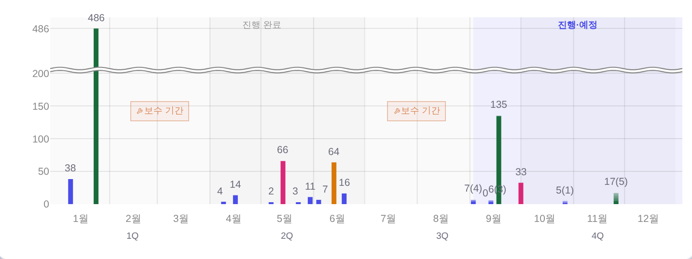
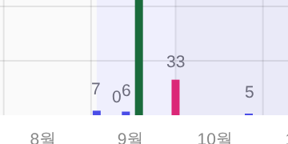
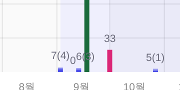
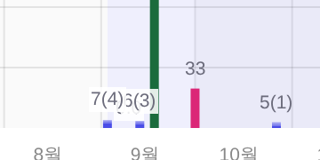
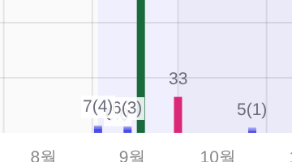
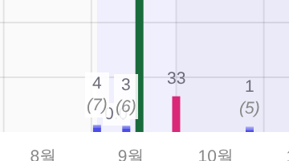
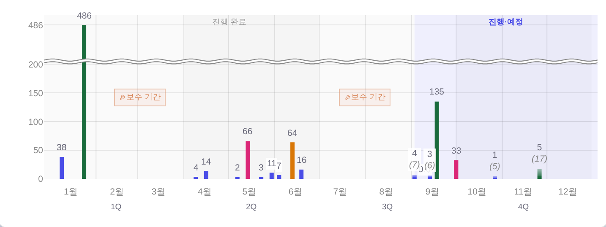

예상 칸 — 그라데이션이 다시 사라지지 않게 + 라벨 「예측치(현재치)」
지시(운영자 260813) ①「9월 차트 위에 0이 따로 있는 것이 뭔지 확인」 ②「다시 그라데이션 수치가 빠졌거든? 그거가 들어갔을 때의 위치에 각 숫자가 있는 것 같다」
③「그라데이션(예측치)는 예를 들어 70(33) · 예측치(현재치) 이렇게 표기되어야 할 듯」 ·
화면 = 커밋된 스냅샷 목데이터(tools/scratch/probe_fcgrad_ba.mjs) ?qa=admin · 실API·PII 미접촉 · 1600×900.
① 「0」의 정체 — 값이 아니라 매출 0으로 조인된 판매중 공연
막대 높이가 0이라 숫자만 바닥에 남는다. 코드 경로 = _rev = isFinite(p.money) ? p.money : null —
매출이 null(미조인)이면 막대를 안 그리지만, 0(조인됐는데 0원)이면 「값이 0인 막대」로 그려서 라벨 0이 선다.
| 자리 | 사업 | 장르 | 상태 | 판매 | 매출 | 점유율 |
|---|---|---|---|---|---|---|
| 09.10 | 여수세계섬박람회 기념 음악회 | 클래식 | 판매중 | 0명 | 0만 | 0.0% |
② 그라데이션이 사라지던 진짜 이유 — 지운 게 아니라 다시 그려서 벗겨졌다
예상 칸은 투명하게 태어나(Plotly 막대는 단색만 받는다) 렌더 후 SVG 덧칠이 유일한 잉크다(기틀 §2 #18).
그래서 Plotly가 한 번이라도 다시 그리면 fill이 투명으로 돌아가 그라데이션만 증발하고 자리·숫자는 그대로 남는다 —
운영자가 본 「숫자만 예상 높이에 떠 있는」 화면이 정확히 그 상태다.
| 실측(1600×900) | 칠해진 예상 칸 | <linearGradient> defs |
|---|---|---|
| 그린 직후 | 5칸 | 5개 |
fit 1패스 뒤(Plotly.relayout(height)) — 전 | 0칸 | 5개 그대로 |
| fit 1패스 뒤 — 후 | 5칸 | 5개 |
- 그 relayout을 부르는 자리 =
_bizFitSeason()(차트를 유리박스 안선에 맞추는 fit). 그 함수는 창 크기 변경 · 책 넘김 500ms 뒤 1패스 · 레일 렌더에서 다시 돈다. - 첫 그리기 직후엔 「높이가 20px 넘게 바뀌면 다시 그린다」가 우연히 되살렸지만, 그 뒤 오는 fit(2~20px)은 덧칠만 지우고 다시 그리지 않는다 = 그때부터 없다.
- 고친 자리 = 「누가 지웠나」를 쫓지 않고
plotly_afterplot훅으로 다시 그려질 때마다 자동 덧칠 — relayout·resize·restyle을 한 자리에서 덮는다.
③ 라벨 = 예측치(현재치)
자리(예상 꼭대기)·기구(주석)·간격(_BIZ_LAB_DY 3)·잉크(--neutral-text)는 무접촉 — 바뀌는 건 글자 안이다.
반올림해서 두 값이 같으면(예상 칸이 1px 미만) 괄호를 안 붙인다 = 135(135) 같은 뜻 없는 표기 0.



_bizLabW에 괄호 몫 3.5px씩을 더해 자리잡기가 새 폭을 봤다).
다만 라벨이 길어진 만큼 사업이 몰린 달은 숨구멍이 줄었고(9월 = 7(4)·0·6(3)이 나란히),
그 자리를 「옆으로 비켜서」 지키고 있었다 — 운영자는 그 비킴 자체를 실패로 판정했다(아래 §⑤).④ 게이트 — 같은 회귀가 또 나면 커밋이 막힌다
tools/smoke_bizchart.mjs 계약 ⑥ 신설 = 「그라데이션은 다시 그려도 살아 있다」.
relayout(height)·Plots.resize를 실제로 태우고 칠해진 칸 수가 줄면 FAIL.
- ⚠ defs 개수로 재지 않는다 — 지워지는 건 칠이라
<linearGradient>는 그대로 남는다. defs를 세면 「5개 있음」이라 답하면서 텅 빈 화면을 통과시킨다(이번 실측이 정확히 그 모습). - 킬테스트 260813 실증 = 직전 머지본(
225bd1b)index.html에 새 게이트를 걸면 rc=1 — 「relayout 뒤 6 → 0칸 · defs는 6개 그대로」·「resize 뒤 6 → 0칸」 2건 전건 검출 · 고친 뒤 rc=0. - 계약 ⑤ⓒ(숫자 없는 막대 0)의 값 라벨 판별식도 같이 넓혔다 —
/^[0-9,]+(\([0-9,]+\))?$/(괄호꼴을 안 세면 새 라벨이 전부 「숫자 없음」으로 오탐된다).
⑤ 260813-2/3 — 0은 `0.n` · 가려지면 흰 반투명 판 · 가로 비킴 폐지
추가 지시 ①「0일때는 0.n으로 별도로 표기」 ②「차트에 가려지면 흰색 반투명 배경을 깔자」 ③(겹침 해소 방식 질의에 대한 판정) 「상단에 무조건 숫자가 있어야 함 · 차트 옆에 있는건 실패임 · 단 가려질 경우 흰색 반투명」.




| 실측(1600×900) | 전 | 후 |
|---|---|---|
| 0 라벨 | 0 | 0.0 |
| 가려진 라벨 / 판 | 2 / 0 | 2 / 2 |
| 막대 꼭대기↔숫자 간격 편차(계약 ≤1.5px) | 0.86px | 0.86px |
| 라벨 중심 ↔ 제 막대 중심(계약 ≤2px) | 최대 12px(비킴) | 최대 0.49px |
0.0은 두 이웃 숫자 밑에 깔린다.
부결된 대안 = 비킴 상한 확대 / 몰리면 괄호 생략 / 0 라벨 숨김.- 게이트 ⓕ·ⓖ 신설 · ⓔ 개정 — ⓕ「가려진 라벨은 전건 판 · 안 가려졌는데 판을 이면 잉여 = FAIL」 ⓖ「라벨 중심 = 막대 중심 Δ≤2px」 ⓔ 포갬은 정보만.
- 킬테스트 4/4 = 판 제거 rc=1 · 전 라벨에 판 rc=1 · 세로 보정 뒤집기 rc=1(Δ2.61px) · 라벨 ±9px 비킴 rc=1(13개) · 원복 rc=0.
- 판 색 =
--surface-solid알파 0.88 변주(이 파일 판매 차트 주석이 쓰던 값 계승) ·_yrHexA(토큰,0.88)이라 raw hex 0.
⑥ 260813-4 — 현재치 위 · (예상치) 아래(두 줄 · 수직 맞춤 · 연한 기울임)
지시 「현재 수치를 그냥 표기 · 예상 수치를 () 안에 · 현재 수치를 위에, 수직맞춰서 예상 수치를 그 아래로 ·
예) 현재 4에 7이 예상되면 4 / (7) · 4랑 7은 수직 유지 · (7)은 더 연하게 - 기울임체」 →
구 한 줄 예측치(현재치)(70(33))는 폐지(읽는 차례가 뒤집혔다 — 먼저 오는 수 = 지금, 괄호 = 앞으로).
7(4)·6(3)·17(5)
4/(7) · 3/(6) · 5/(17)

- 수직 맞춤은 새로 계산하지 않는다 — Plotly 주석 기본 정렬(
align= center)이 그대로 준다.(7)의 가운데가 곧7의 가운데 = 좌표 계산 0. - 아랫줄 잉크 =
--dim(중립 사다리 한 단 아래 · 이 차트 눈금 라벨이 이미 쓰는 자 · 기틀 §2 #16 ⓑ의 「보조」 규약) = 새 색 0. 기울임은 Plotly가 지원하는<i>로만. - 같이 따라간 자 = 글상자 폭(긴 줄) · 높이(13 + 줄당 12.5) · 자리잡기 세로 임계(두 높이의 평균 + 6 · 한 줄끼리는 여전히 19 = 회귀 0) · 축 여유(16 → 28.5px — 안 넓히면 윗줄이 잘린다).
- 반올림해서 두 값이 같으면 아랫줄을 안 붙인다(보여 줄 「범위」가 없는데 글상자만 두 배가 된다).
| 실측(1600×900) | 값 | 계약 |
|---|---|---|
| 예상 줄 | 5개 전건 연한 기울임 | ⓗ |
| 막대 꼭대기↔숫자 간격 편차 | 1.05px | ≤1.5px (ⓑ) |
| 라벨 중심 ↔ 제 막대 중심 | 최대 0.58px | ≤2px (ⓖ) |
| 숫자 없는 막대 / 그라데이션 생존 | 0 / 6칸 유지 | ⓒ · ⑥ |
⚠ 260813-3의 남는 사실은 그대로다 — 9일 안에 3건 몰린 9월은 자리가 없어 가장 작은 값이 이웃 숫자 밑에 깔린다(라벨이 두 줄이 되며 그 자리는 더 좁아졌다).